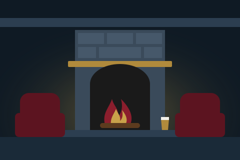

What it is
Yarning is an evening of true stories, told in a pub by veterans of the British Armed Forces. Two or three veterans take turns by the fire to tell a yarn from their own lives: a first posting, a hard winter on exercise, a friendship that has lasted forty years, the day things went wrong and what came after.
It is not a lecture, not a parade and not a politics lesson. It's good company and good stories, followed by questions from the room.
Why pubs, and why winter
People have always told stories in pubs. A snug with a fire going is the natural place to sit and listen to someone who has lived an unusual life. Veterans are in every village and market town, and many have never been asked to tell their story. Most regulars have never heard one first-hand.
From November to March, the dark evenings and quiet weeknights are the hardest part of the year for many rural and market-town pubs. A Yarning night gives people a reason to come out on a Tuesday in February, and gives the pub a warm, full room.
The shape of an evening
- 7.00pm Doors open. Drinks, and supper if the pub is serving
- 7.30pm Welcome from the host
- 7.35pm First yarn, about twenty minutes
- 7.55pm Second yarn, about twenty minutes
- 8.15pm Interval: bar, food, conversation
- 8.35pm Third yarn (optional)
- 8.55pm Questions from the room, led by the host
- 9.25pm Thanks and close. The bar stays open
What the pub provides
- A fire or snug-style room, ideally with the fire lit
- Seating for roughly 30 to 60 people
- A simple microphone if the room needs one
- A word to your regulars: social posts, chalkboard, posters
- A drink for each speaker
- A named contact on the night
What we bring
- Two or three veterans, chosen for the evening, with a mix of services, eras and backgrounds
- A host to introduce the speakers, keep time and chair the questions
- A poster and social media images with your pub's name and date
- A briefing for every speaker on format and tone, and a conversation with you about anything sensitive (for example, under-18s in the room)
- One point of contact from first enquiry to the evening itself
For pub companies
Yarning works just as well across several pubs as at one. A small pub company or brewery estate could run a winter series in its village and market-town pubs, with one pub one month and the next the month after. We arrange the speakers and the host; your pubs provide the fire and the welcome. There is a modest fee, details on request.
Where it comes from
Yarning grows out of Veterans' Story Hour. The pilot Story Hour was held at The Vine Inn, Cumnor, on Monday 14 September 2026, and the film is free to watch.

Veterans' Story Hour school visits are free to schools and supported by a Civic Future Action Grant. Yarning evenings are arranged separately with each pub.
Talk to us about an evening
If you run a pub, or a group of pubs, and would like to host a Yarning evening this winter, get in touch with Rory Hanrahan.
- Email myone_ie@hotmail.co.uk
- Phone 07752 144777